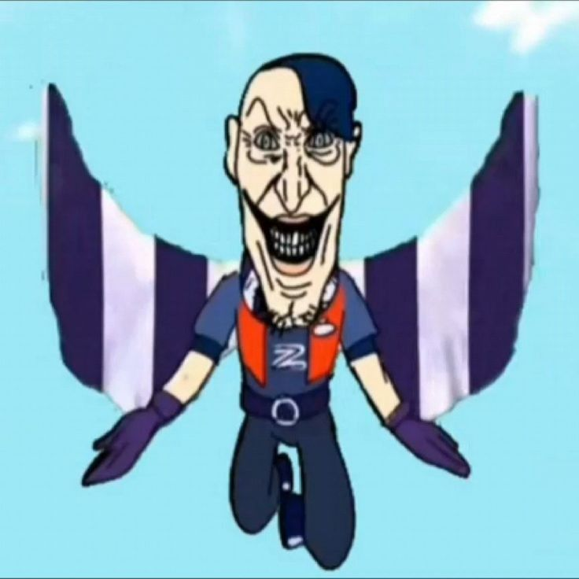

Едгар
Епічний боєць класу "Вбивця"
Його гіперзаряд: "Вибух емоцій"

Коли Едгар активує свій гіперзаряд, швидкість перезарядки його ударів та швидкість накопичення суперсили значно збільшуються. Він стає практично непереможним у ближньому бою на кілька секунд, стрімко відновлюючи здоров'я від кожної атаки.
Факти про його пасівки
«Бійцівський клуб» — перша зірковая сила, яка збільшує рівень зцілення від його власних ударів на 25%, що дозволяє довше виживати в епіцентрі бійки.
«Жорстка посадка» — друга пасівка, яка приземляючись після ульти завдає 1000 одиниць шкоди всім ворогам, що опинилися поруч.
Чому за нього легко грати?
За Едгара дуже легко грати, тому що його суперсила (стрибок) автоматично заряджається сама по собі з часом. Гравцеві не обов'язково ризикувати й атакувати ворогів здалеку, щоб отримати ульту. Достатньо просто почекати в кущах, накопичити стрибок, а потім раптово влетіти на слабкого супротивника та швидко забрати банки.